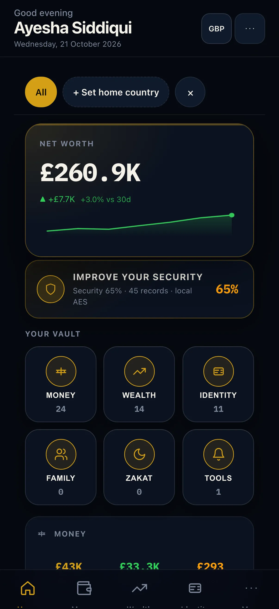

Illustrative story Illustrative story. People and data are fictional.
VaultCap · Lahore, Pakistan
How Ayesha stopped digging through drawers
Ayesha runs a pharmacy and two school runs in Lahore. She finds documents on her phone between customers, reviews family profiles on the kitchen iPad, and does banks plus Zakat on the laptop — always on-device, always fictional sample data.
“I stopped digging through drawers.”

Before and after
Illustrative numbers from a fictional week.
Before
After VaultCap
A day with Ayesha
-
Morning vault
Pharmacy keys in one hand, Ayesha opens VaultCap on her iPhone — three expiries this month, including a school passport she would have found in a drawer too late.
-
Documents find
Between customers a phone search finds the passport scan in seconds; she texts the school office without leaving the counter or digging through WhatsApp.
-
Family on iPad
Kitchen iPad after school runs: husband’s profile separate, kids’ docs labeled, everything still on-device — no family Dropbox argument.
-
Banks glance
Laptop for a calm look at sample bank accounts before Ramadan planning; numbers illustrative, tone quiet, no tipping or advice.
-
Zakat summary
Same laptop shows a Zakat summary from holdings so she can email the accountant without photographing paper ledgers.
-
Reminders set
Phone locks with renewal reminders confirmed. Drawers stay drawers. The vault stays the vault.
Watch it
A day across devices — silent walkthrough with captions. No autoplay with sound.
Read transcript
Morning vault on iPhone shows expiries. Midday search finds a passport scan. Evening iPad separates family profiles. Laptop banks and Zakat stay calm and illustrative. Phone reminders lock the day. Fictional sample vault throughout.
Features Ayesha uses
Illustrative story. People and data are fictional.